Confirm the obvious.
An algorithm based on correct logic will lead to correct results.
An algorithm based on incorrect logic will lead to either correct or incorrect results.
Cannot conclude that an algorithm is correct based on results alone.
There are probably bugs in GNPX. For this reason, i do solve a large number of puzzles.
(GNPX has a function to automatically solve and evaluate puzzles.)
The content of this page is still under development and requires strict review.
Exocet
Exocet is a "different type of locked" algorithm from other algorithms.
There are situations that can be solved only with Exocet, making it an attractive algorithm.
There are various types of Exocet, from simple to extended types, and Exocet is the general term for them.
- JExocet (JE2)

- JExocet (JE1)
- (Standard) Exocet (SE)
- F/M Exocet (Franke/Mutant Exocet)
- Exocet Family
- Exocet Sample
Junior Exocet (JE2)
JExocet is Locked due to the Base, S area, Target relationship.
There are two or more candidate digits in the two cells of Base.
If there are two it's a "LockedSet", so let's assume there are three or more.
JExocet Locked is a constraint that:
Exocet Locked : Any two digits selected from the base candidate digits will
result in positive values in Target1 and Target2.
In reality, there are more than two candidate digits in Base, so "no matter which two digits choose,
there will be no contradiction."
The following logic can be derived from JExocet Locked, which is detailed in the Exclusions section below.
- Target only includes candidate digits.
- If the Base digit is positive for one Target, it is negative for the other Target.
- A base digit with a Cross-Cover-Line is negated in the corresponding Target.
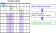
JExocet Locked is true when the "Shape definition" and "Candidate digits conditions" shown below are met.
(1) (JE2) Shape definition
Junior Exocet has multiple role cells, arranged as shown in the following diagram.
- Base cells are placed on mini line within a block.
- Escape cells are positioned complementary to Base cells.
- Target cells can be placed in two ways: diagonal or aligned.
- Companion cells are placed in conjunction with the Target cell's position.
(Note) The complementary property of Base and Escape is based on the condition that they are "covered by two CoverLines" as described below.
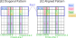
* [Additional information for understanding of Exocet]
To understand how Exocet works, it is helpful to distinguish between "directions."
Using the "Base alignment" as the reference, a direction parallel to this is "Parallel".
A direction that intersects with this is "Cross."
When it is clear from the context, these are often omitted.
The shape of JExocet is derived through the following steps, which can also be used as a reference when creating JExocet solution code.
-
Step 1: Select one cell (Stem cell) on the board and its direction (row/column). This determines the mini-line.
The mini-line's two Base cells (B1, B2), Band, and two Blocks (Block 1, Block 2) are determined. Additionally, Cross-Line-b is determined based on the Stem cell and direction.*Mini-line is three cells in a row or column within a block.
*Stem cells are used to guide the shape and are not involved in Exocet logic. Also, stem cells can be either fixed or unfixed.
- Step 2: Blocks1 and 2 each contain six cells that are not connected to the Base.
From each block, select an undetermined Target cell (T1, T2).
The direction and Target cell (T1, T2) determine the Companion cells (C1, C2), Cross-Lines (CL1, CL2), and SLines (S1, S2). These cells can be either determined or undetermined.
Companions play an important role in establishing an Exocet. This will be explained later.
SLines (S0, S1, S2) are the areas outside the Cross-Line band.
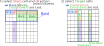
Mirror does not affect the establishment of Exocet Locked.
The relationship between the target and the mirror allows to derive the cells/digits that can be excluded
when the Exocet-Lock is established.
Mirror will be discussed in a separate section.
(2) (JE2) Candidate digits conditions
Under the definition of JExocet, the following conditions (R1 to R4) are tested.
When all Base Digits satisfy conditions R1 to R4, it becomes Exocet Locked.
JE2 Candidate digits conditions
| R1 | The Base cells(B1, B2) are both undetermined cells and have a total of 3 to 4 base digits. |
| R2 | The target cells(T1,T2) are both undetermined cells and have a total of three or more base digits. |
| R3 | The Companion cell does not contain a Base digits. |
| R4 | For all Base digits, the Base digits in the S region {S0,S1,S2} are covered by two Lines(Houses). |
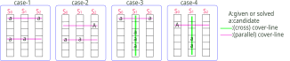
Explain these conditions in more detail here.
| R1’ | If there are two base candidate numbers in the base cell, it is a LockedSet.
If there are 5 or more, it is predicted that "there are more constraints and it is unlikely to exist."
Therefore, R1 is "Base digits between 3 and 4." It will likely expand(3 to 6 in GNPX ver. 6). Two Base cells may not have any digits in common. |
| R2’ | Target can also include candidate digits other than the Base digits. |
| R3’ | Companion is fixed or unfixed cells. |
| R4’ | The Base digtis in the S region {S0, S1, S2} can be either candidate digits or fixed digits. |
(3) JExocet logic ... Locked proof
Base digits that satisfy R1 to R4 are Locked.
When select any two digits from the Base digits, the following proposition holds true for those two digits:
Proposition: If the digits in Base are positive, the digits in Target-1 and Target-2 will also be positive.
- Proof of JE2 Locked (CL:Cross-Line)
- L1. In the Base, the Base digits#ab is positive. And in Escape, #ab is negative.
- L2. CL-b, CL-1, and CL-2 each have three instances of #ab (according to Sudoku rules), for a total of six instances.
- L3. Since R4, S-Area(S0,S1,S2) have two #a CoverLines and two #b CoverLines.
- L4. Since "6-4=2", there are instances of #a and #b in the Band area of CL-1 and CL-2.
- L5. The #a and #b instances are not in Escape or Companion, but in Target1 and Target2, respectively.(it is not clear which).
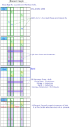
(4) Understanding Exocet Locked
Consider the Exocet Locked
For Exocet Locked, no matter which two candidate digits are selected from the candidate digits in Base,
they will be positive in Target.
The target puzzle has a solution and is a unique solution.
If look back from the solution, any two base candidate digits(#a,#b) are fixed digits(#A,#B).
Since there are three or more candidate digits for Base, if focus on the remaining "#x",
candidate digit #X is negative in Target and positive in Escape.
However, while solving the puzzle, it is not known which of the Base candidate digits is the solution.
Exocet Locked is an inference that is not certain but can still be derived.
A similar inference can be imagined, for example, as LockedSet.
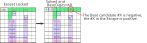
(5) Mirror Logic
Mirror is the logic that arises when Exocet Logic holds.
1) Assume that Exocet Locked is established.
2) If the Target is #a, Mirror has the same #a.
contrapositive :
If Mirror has no #a. the Target is not #a.
3) Any Base candidate not in Mirror are not in Target.
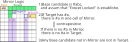
In JE2, the Base, Target, and Mirror are within the same Band and are in positions where their scopes do not overlap. For this reason, exclusion using Mirror is valid. In cases other than JE2 where the Band constraint and scope overlap condition do not hold, the logic of exclusion using Mirror does not hold.
Exclusion
When Exocet Locked is established, the candidate digits may be confirmed as negative/positive.
On this website and GNPX, the exclusion rules are used as follows:
- The exclusion rules are based on the JE2 rules in the Bird document, and the numbers from that document are reused.
JExocet Compendium by:David P Bird
http://forum.enjoysudoku.com/jexocet-compendium-t32370.html
- It does not deal with logic that leads to negation/affirmation secondary to the logic, as with other analysis algorithms. Secondary effects are analyzed in the next step.
- Some exclusion rules cannot be applied to the extended Exocet.
- Exclusion rules using mirrors other than Rule 6 can only be applied if the two base numbers of the base have been determined.
- Exclusion rules may be able to take advantage of the results of previous rules. GNPX uses an iterative approach.
Exclusion rule
-
E3. Non-base digits in Target are negated.
If Exocet Locked, any base candidate digits will be entered in Target. Therefore, there is no room for non-base digits to be entered in Target.
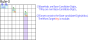
-
E4. If the Base digits is determined to be positive in one Target, it is negative in the other Target.
Each Target has a different Base digits. If one target is confirmed to be positive, the other target will be negative.
If two cells of the Object have determined numbers, the numbers in the scope are excluded.
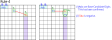
-
E5. A Base digits with a Cross Cover-Line is negated in the corresponding Target.
This can be derived as follows:- (1) Suppose S1 has a Cross-Cover-Line of #a.
- (2) Proposition: In T1, the Base candidate digitd #a is positive.
- (3) Base #a is positive.
- (4) S0 has #a instance.
- (5) There is no #a instance in S2.
- (6) T2 has +#a.
- (7) T1#a and T2#a are in conflict (other Base digits cannot be placed in Target).
Therefore, (2) proposition is false and #a of T1 is negative.
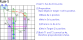
E6. Any base digits that cannot be made positive in the corresponding Mirror of the Target is negative in the Target.
By the definition of JExocet, the proposition: Any Base digit that is positive in Target is also positive in Mirror holds.Rule-6 is the contrapositive of this proposition.
A mirror cell can also be a fixed digits. If it is a fixed digits that is different from the Base digits, it meets this condition.
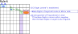
E7.If one of the Mirror Cells does not contain the Base digits that is in the corresponding Target, then the other Cell of the same Mirror contains the Base digits that is in the corresponding Target.
Based on the position of the Mirror and the spheres of influence of the Base and Target, the Mirror has a base number that is the same as the Target. Therefore, non-Base digits can be excluded from M1B.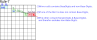
-
E8. "Assume the Base digits is determined." If the mirror cell contains one non-base number, it is positive.
The Mirror cell contains Base digits and non-Base digits.
Assume that the Base digits has been determined.- Regarding non-Base digits included in Mirror,
- For one cell: The non-Base digits is determined and can be excluded from the non-Base digits in the cells that reference it.
- For two cells: Exclude non-Base digits from cells that commonly reference two Mirrors.
-
E9. When there is a Locked digit in Mirror, if that digit is a Base digit, other Base digit can be excluded in Mirror. Alternatively, if the digit is a non-Base digit, other non-Base digit can be excluded from the mirror.
Mirror contains Base and non-Base digits.
When Mirror has locked digits [Mirror_Locked], the locked digits are constrained to allow both base and non-Base digits.
There can be no arrangement of two Base digits in two mirror cells. Similarly, cannot have two non-Base digits.- When the Mirror_Locked digits is a base digits and
Base_Locked,
the other base digits in the Mirror is negated. - When the locked digits is a non-Base digits, the other non-Base digits in the mirror is negated.
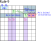
- When the Mirror_Locked digits is a base digits and
Base_Locked,
-
E10. If Base digits are Locked, The Base and Target range of influence can exclude Base candidate digits.
The Base digits are determined to be positive and therefore negative within their range of influence. Also, the target is positive, and the common sphere of influence is negative.
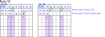
-
E11. Digit that appears only once in the Escape Cell of a Cross-Line is negated in the cells other than "SArea" of its Cover House.
Rule-11 of the Bird document has changed. Rule-12 includes the exclusion of fixed Base digits.
In this section, the digits must be one of the possible solutions of JExocet. This rule cannot be applied indefinitely.
- (1) Assume #abx are possible solution for Exocet.
- (2) If #ab are determined to be a solution, #x is not a solution. In this case, #x is in Escape.
- (3) Since #x is a candidate solution for JExocet, the jExocet conditions (the relationship between Base, Target, and S) are valid.
- (3) If there is one #x in the Escape of the Base block, it is positive.
- (4) If there is one #x in Escape of CrossLine-1,-2, it is positive.
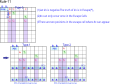
-
E12. If two Base candidate digits are determined to be positive, then any digit instance in the SArea that prevents the two instances from being positive is negative.
Assume that two Base candidate digits (#ab) are confirmed as positive.- (1) Let T1=#a. S1 does not have #a.
- (2) (From Basic rules,) there is one #a in S0.
- (3) Conditions for candidate digits: According to R4, the candidate digits in SArea covered by two Cover-Lines. S2 contains #a.
- (4) Elements (▲) outside the SArea of Cover-Line prevent the Cover-Line condition (R4) from being satisfied.
(PCL-{S})#a is negative (PCL:Paralell-Cover-Line, -:difference set)
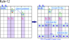
- The Base digits to be tested are in Target.
- The instances of the two Base digits are in S0. The instances may be fixed.
- The two Cross-Blocks of the two Base Cells have the Base digits of the candidate.
- Case-1:Two instances of Base digits in S0 are in the same cell.
This pattern is not a possible Sudoku solution, so this combination pattern can be ruled out. - Case-2:Two instances of Base digits in S0 are in the same Cross-Block.
This pattern eliminates all Base digits in the cross-block.
It has no effect on the other Cross-Block.
Therefore, this combination has a Base and UR relationship,
The uniqueness of the Sudoku solution means that this combination pattern can be ruled out. - Case-3:The instances in S0 of the two Base digits are in different Cross-Blocks.
This pattern eliminates each Base digit in each Cross-Block.
In this case, it will not be Base and UR.
Therefore, this combination pattern remains a possible solution.
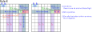
CrossLine-1,-2
Exclusion - 2
Exclusion-2 is an exclusion with two Base digits. In the Bird documentation, it is listed under "Incomtible Base Pairs".
The candidate digits in the two Base can be freely combined and are not candidate Base digits.
For example, if the candidate Base digits are (1,2,3), the possible combinations are {(1,2),(1,3),(2,3),(2,1),(3,1)(3,2)}.
Also, if the candidates in the two Base digits are different, this will be a possible combination pattern.
Test each of these combinations. Based on the characteristics of Exocet, use the following:
There are three types of instances in S0.
"Exclude-2" detects ineligible Base digit combinations. GNPX tests "Exclude-2" before "Exclude-1".
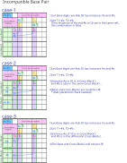
Junior Exocet_1 (JE1)
JE1 is a type with one Target.
In JE2, a fixed digits (the Puzzle digits or a fixed digit by analysis) is located at the location of one Target.
The elements of JE1 are a Base, a Base digit, one Target (object), and a fixed digit Target(an Object with a fixed digit other than the Base digit).
The crossline of the Base, the Sline of the Target, and the blank Object are defined in the natural form of Junior Exocet.
There are two types of cover for S cells {S0, S1, S2}. This is a condition unique to JE1.
- S Criteria: Covered by two CoverLines.
- Wildcard Criteria: Covered by 3 CoverLines.
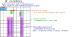
JE1 logic
The following logic applies depending on how the Base digits of JE1 are covered.
-
(1) Base digits that meets S criteria
- Proof of "S Criteria Locked" (CL:Cross-Line)
- 1)Assume that Base digit #a has two CoverLines in the S area.
- 2)A CrossLine containing the S-area requires a total of three #a instances.
- 3)Therefore, there is #a in Target.(3-2=1)
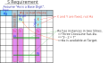
-
(2) Base digit that meets the Wildcard criteria
- Wildcard Criteria Certification (CL:Cross-Line)
- 1) Assume that Base digit #z has more than 2 CoverLines in the S region.
- 2) A CrossLine containing an S-Area requires a total of three #z instances.
- 3) Therefore, there is no #z in Target. (3-3=0)
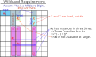
JE1 Exclusion
If JE1 holds, the next exclusion can be made.
- The Target Wildcard (#z) is determined to be negative.
- The Base Wildcard is determined to be positive, and the other Base digit is undetermined.
- The Escape Wildcard is determined to be negative.
- The Sline-1 Wildcard is determined to be positive. If there is only one, all other candidates other than the corresponding cell's Wildcard can be eliminated.
- By determining the Base and Target Wildcards, the Wildcard digit in its sphere of influence becomes negative.
Exclusions 4 and 5 are cascading exclusions, so they are not supported by GNPX.
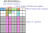